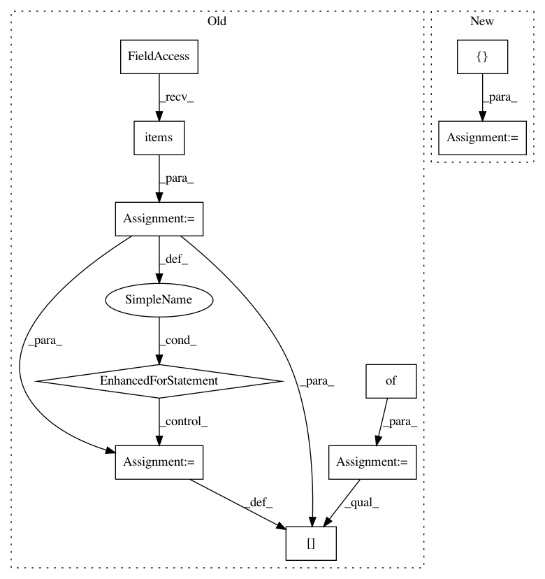

d55bad55b6a9e97f800c97c73038bc5ed8d4b31f,arviz/data/io_pystan.py,PyStanConverter,observed_data_to_xarray,#PyStanConverter#,219
Before Change
else:
dims = self.dims
if isinstance(self.observed_data, dict):
observed_data = {}
for key, vals in self.observed_data.items():
vals = np.atleast_1d(vals)
val_dims = dims.get(key)
val_dims, coords = generate_dims_coords(
vals.shape, key, dims=val_dims, coords=self.coords
)
observed_data[key] = xr.DataArray(vals, dims=val_dims, coords=coords)
else:
if isinstance(self.observed_data, str):
observed_names = [self.observed_data]
else:
After Change
dims = self.dims
observed_names = self.observed_data
if isinstance(observed_names, str):
observed_names = [observed_names]
observed_data = OrderedDict()
for key in observed_names:
vals = np.atleast_1d(posterior.data[key])
val_dims = dims.get(key)
val_dims, coords = generate_dims_coords(
vals.shape, key, dims=val_dims, coords=self.coords
)
observed_data[key] = xr.DataArray(vals, dims=val_dims, coords=coords)
return xr.Dataset(data_vars=observed_data, attrs=make_attrs(library=self.pystan))
def to_inference_data(self):
Convert all available data to an InferenceData object.
In pattern: SUPERPATTERN
Frequency: 3
Non-data size: 10
Instances
Project Name: arviz-devs/arviz
Commit Name: d55bad55b6a9e97f800c97c73038bc5ed8d4b31f
Time: 2018-11-03
Author: ahartikainen@users.noreply.github.com
File Name: arviz/data/io_pystan.py
Class Name: PyStanConverter
Method Name: observed_data_to_xarray
Project Name: ilastik/ilastik
Commit Name: d40f6897462529dc4fece406c810834127f9a803
Time: 2014-08-19
Author: bergs@janelia.hhmi.org
File Name: lazyflow/operator.py
Class Name: Operator
Method Name: handleInputBecameUnready
Project Name: ilastik/ilastik
Commit Name: 9a2f08733fbbbac28da5dba88cadbdcd021f412b
Time: 2014-08-22
Author: bergs@janelia.hhmi.org
File Name: lazyflow/operator.py
Class Name: Operator
Method Name: handleInputBecameUnready